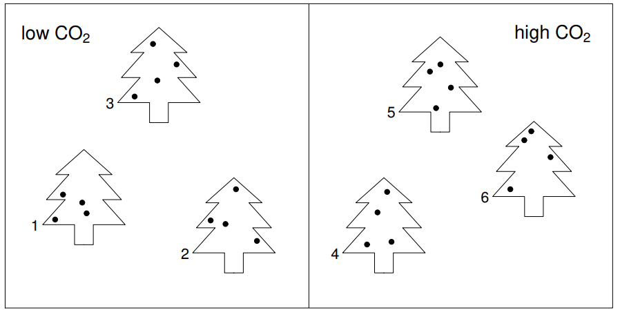

Chapter 1 线性混合模型
1.1 案例1
两组CO2实验，高CO2浓度和低CO2浓度。每组3棵树（tree）、每棵树测4片叶子的气孔面积（area）。
问题：CO2对气孔导度的影响

1.1.1 错误的方法，固定效应模型
library(JOPSbook)
library(gamair)
library(magrittr)
library(data.table)
data("stomata")
stomata %<>% data.table()
summary(stomata)#> area CO2 tree
#> Min. :0.8753 1:12 1:4
#> 1st Qu.:1.5396 2:12 2:4
#> Median :2.0166 3:4
#> Mean :2.0679 4:4
#> 3rd Qu.:2.7600 5:4
#> Max. :3.1149 6:4#> area CO2 tree
#> 1: 1.6055739 1 1
#> 2: 1.6300711 1 1
#> 3: 1.5391189 1 1
#> 4: 1.7187315 1 1
#> 5: 1.3896163 1 2
#> 6: 1.5858805 1 2
#> 7: 1.4697276 1 2
#> 8: 1.9493473 1 2
#> 9: 1.5397020 1 3
#> 10: 1.2436558 1 3
#> 11: 0.8752505 1 3
#> 12: 0.9932352 1 3
#> 13: 3.1149370 2 4
#> 14: 2.7402102 2 4
#> 15: 2.4825228 2 4
#> 16: 2.8192831 2 4
#> 17: 2.8924475 2 5
#> 18: 2.8622759 2 5
#> 19: 2.8410755 2 5
#> 20: 3.0183753 2 5
#> 21: 2.6576575 2 6
#> 22: 2.0839150 2 6
#> 23: 2.2310707 2 6
#> 24: 2.3464027 2 6
#> area CO2 tree\[ y_i = CO2 * α_j + tree * β_k + ǫ_i \]
其中i代表第i个观测数据，j代表CO2浓度，k代表树。
#> Analysis of Variance Table
#>
#> Model 1: area ~ CO2
#> Model 2: area ~ CO2 + tree
#> Res.Df RSS Df Sum of Sq F Pr(>F)
#> 1 22 2.1348
#> 2 18 0.8604 4 1.2744 6.6654 0.001788 **
#> ---
#> Signif. codes: 0 '***' 0.001 '**' 0.01 '*' 0.05 '.' 0.1 ' ' 1通过anova方差分析可以看到，tree对气孔的影响显著。
#> Analysis of Variance Table
#>
#> Model 1: area ~ tree
#> Model 2: area ~ CO2 + tree
#> Res.Df RSS Df Sum of Sq F Pr(>F)
#> 1 18 0.8604
#> 2 18 0.8604 0 2.2204e-16m2和m1的方差分析显示，CO2对气孔的影响也显著。CO2、tree对气孔是协同影响。
#> tree CO2 area
#> 1: 1 1 1.623374
#> 2: 2 1 1.598643
#> 3: 3 1 1.162961
#> 4: 4 2 2.789238
#> 5: 5 2 2.903544
#> 6: 6 2 2.329761#>
#> Call:
#> lm(formula = area ~ CO2, data = st)
#>
#> Residuals:
#> 1 2 3 4 5 6
#> 0.1617 0.1370 -0.2987 0.1151 0.2294 -0.3444
#>
#> Coefficients:
#> Estimate Std. Error t value Pr(>|t|)
#> (Intercept) 1.4617 0.1629 8.970 0.000855 ***
#> CO22 1.2125 0.2304 5.262 0.006247 **
#> ---
#> Signif. codes: 0 '***' 0.001 '**' 0.01 '*' 0.05 '.' 0.1 ' ' 1
#>
#> Residual standard error: 0.2822 on 4 degrees of freedom
#> Multiple R-squared: 0.8738, Adjusted R-squared: 0.8422
#> F-statistic: 27.69 on 1 and 4 DF, p-value: 0.006247#> [1] 0.06770177